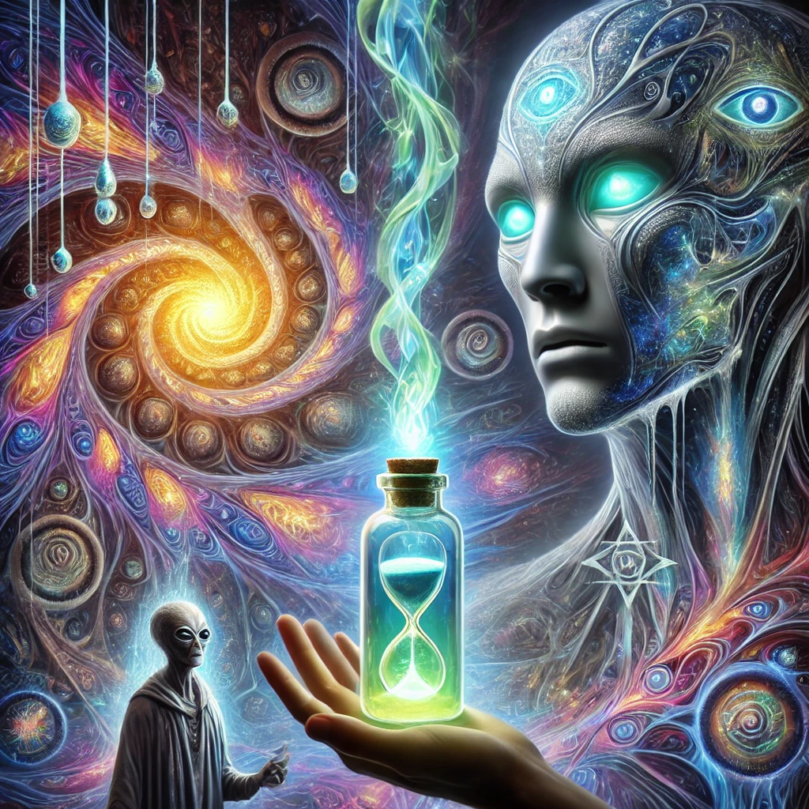

You choose the vial of iridescent liquid, its surface shifting like molten silver under an invisible light. The alien being nods silently, its glowing eyes filled with knowing. Without hesitation, you uncork the vial and drink.
Reality fractures. The forest dissolves into vibrant fractals, cascading in infinite patterns. Ancient symbols pulse in harmony, and a voice—soft yet commanding—speaks from within:
“I am Thoth, keeper of ancient truths. You are now part of the weave of existence. To understand, you must see the connections.”

Your mind expands, revealing the threads that bind all things. You begin to sense the Wu-Wei—the effortless flow of the universe. But the experience is overwhelming, and a question arises: